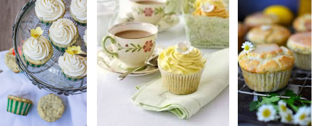

by Sarah Cook
These zesty cupcakes look so gorgeous you won't want to eat them, but once you start you won't be able to stop.
Heat oven to 180C/160C fan/gas 4 and line a 12-hole muffin tin with cupcake or muffin cases. Mix the flour, sugar, lemon zest and poppy seeds together in a large mixing bowl. Beat the eggs into the yogurt, then tip this into the dry ingredients with the melted butter. Mix together with a wooden spoon or whisk until lump-free, then divide between the cases. Bake for 20-22 mins until a skewer poked in comes out clean – the cakes will be quite pale on top still. Cool for 5 mins in the tin, then carefully lift onto a wire rack to finish cooling.
To ice, beat the softened butter until really soft in a large bowl, then gradually beat in the icing sugar and lemon juice. Stir in enough food colouring for a pale lemon colour, then spoon the icing into a piping bag with a large star nozzle.
Ice one cake at a time, holding the piping bag almost upright with the nozzle about 1cm from the surface of the cake. Pipe one spiral of icing around the edge, then pause to break the flow before moving the nozzle towards the centre slightly and piping a second, smaller spiral that continues until there are no gaps in the centre. Slightly ‘dot’ the nozzle into the icing as you stop squeezing to finish neatly. Repeat to cover all the cakes, then top with sugar decorations or scatter with sprinkles.